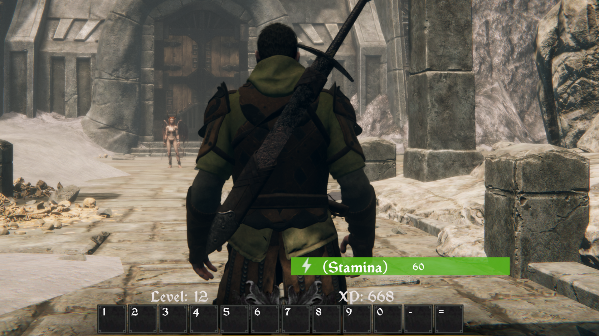
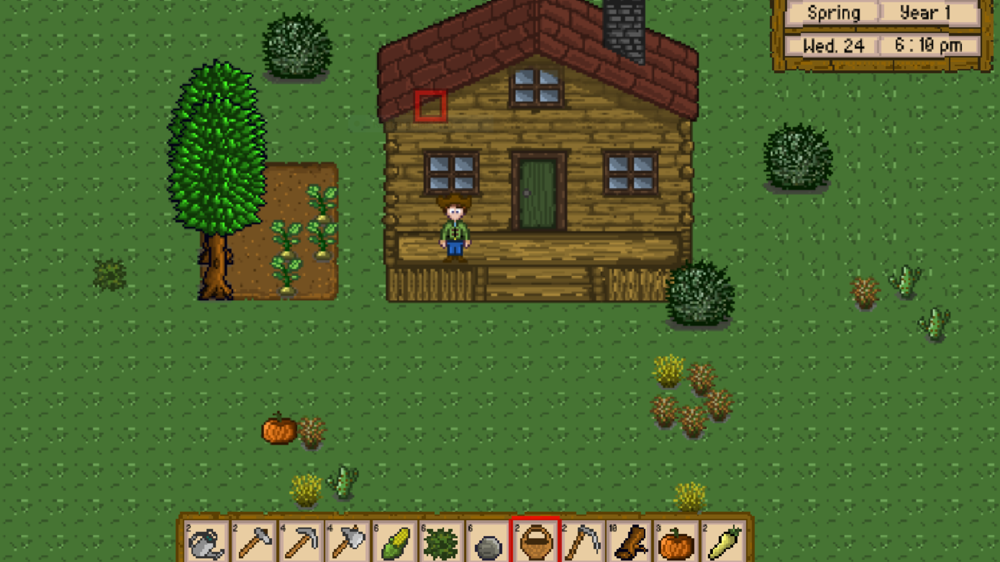

Feel free to send me an email at luismunity@gmail.com—I’ll get back to you as swiftly as I can. Explore my work and join the community on YouTube for a deeper dive into my projects. Your support and feedback are valuable or let’s network on LinkedIn.

Demon Rings
Over a dedicated span of five years I crafted the RPG Demon Rings using Unity and C#.

Farmer Demon Slayer
This is an exciting new game that I’ve just started working on. Inspired by the beloved “Stardew Valley,” it combines farming simulation with demon-slaying action.
Demon Blade.
Crafted using Unreal Engine. This game is a thrilling journey through a world where ancient myths and modern combat collide.
Demon Rings - Echoes of the Fallen.
Players will traverse through forsaken lands, where the echoes of the fallen resonate with every step. Bound by the enigmatic power of the ancient rings, they must face relentless foes, uncover lost secrets, and challenge the very essence of their cursed existence.
Farmer Demon Slayer. Harvest by Day, Battle by Night.
In Farmer Demon Slayer, players step into the shoes of a courageous farmer with an unusual dual role. By day, they cultivate crops, tend to livestock, and nurture their land. But when night falls, they take up arms against malevolent demons threatening their farm. Balancing farming chores with demon-slaying quests, players must harness their agricultural skills and combat prowess to protect their homestead from supernatural forces. Will you be able to harvest both crops and victory?
Demon Blade. Shadow of the Wraith.
In the ancient realm of Eldoria, where magic and steel intertwine, darkness looms. The once-mighty Demon Blade, forged by gods and cursed by malevolence, has resurfaced. Its blade whispers secrets, and its thirst for souls knows no bounds. As a young demon slayer, you inherit the blade’s legacy—a legacy that binds you to the ethereal plane. Your quest: to unravel forgotten prophecies, battle vengeful wraiths, and prevent the blade from plunging the world into eternal night. But beware—the shadows hold more than spectral foes. Ancient cults, forbidden rituals, and long-lost civilizations converge in a dance of peril and power. Will you master the blade’s secrets or succumb to its insatiable hunger? The fate of Eldoria rests on your shoulders.
Contact Me